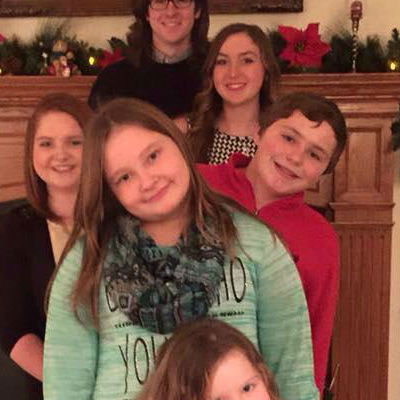
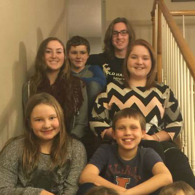
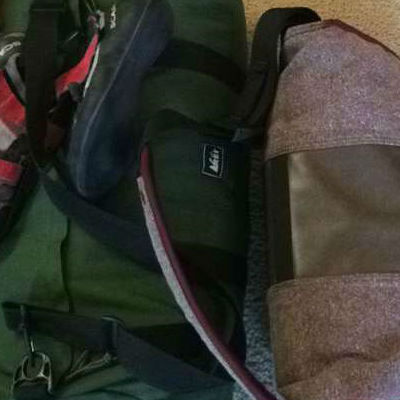

'Traveler' Introduction
This page will essentially be a travel blog. I will include any experience during my time in Spain (and elsewhere in Europe) worth sharing, including photos, videos, and other media. I would also like to include some of my previous travel experiences as well if I can find the time. I imagine that I will be kept quite busy catologing my time in Spain, but I will try to add a post here and there about my travels in Canada, Costa Rica, and Brasil.
I'm assuming this page will likely get the most traffic, however little "the most" is. It will also be the page with the most frequent updates, and I hope that I will able to adequately describe my adventures because they have been amazing thus far.
February 13, 2016

Pre-Departure
I am currently one month into my year in Spain. For those of you unfamiliar with the particulars of my trip, I will be studying in Madrid at Universidad Carlos III (UC3M) for the Spring 2016 semester (January - May 2016). Following this, I will move over to Barcelona and begin an internship at Hewlett-Packard for the Summer and Fall 2016 semesters (June - December 2016). Obviously, I am a little late in getting this blog started, but I will try to catch up and write about my past month in Europe quickly. I will also include any and all photos I was able to take during my time. I would like to say a few words in this initial post about my preparation for this experience and the days leading up to my trip.
The first step in getting to Spain was to apply for a visa. This mostly went off smoothly barring a hiccup or two. That hiccup being the fact that I applied for a six month visa initially only to hear back from HP about getting the internship. While this was great news, I then had to reapply for a year long visa. It was an inconvenience that meant a 5 AM departure for chicago on a weekday, but otherwise wasn't a huge problem.
So I got a visa (or two). And was ready to head to Spain. I had already done the application for UC3M and gotten accepted, so I was all set on that front. Really, the only thing standing between me and Spain was a week of finals, a duffel bag's worth of packing, and time. I was ready. My final few weeks at home during the holidays were spent with family and friends doing nothing in particular.
I set a departure date for January 1st at 11:45 am. I decided to take the scenic route to Spain when my friends (Alden, Tommy, Kristy, and Christine) and I chose to take a 10-day-long trip that would take us to London, Paris, Geneva, and Marseille before landing us in Spain. I honestly felt no anxiety leading up to the trip, and that can probably be traced to blinding excitement and youthful exuberance.
I spent a good holiday with family and friends and really tried to make good use of what little time I had left at home. I spent a lot of time catching up with high school friends and visiting family. I was so busy trying to see everyone before I left that I continued to put off packing until the day before. Packing was a bit of an adventure but certainly made easier by the fact that I decide to only take what I could carry onto the airplane. So I spent the New Year with friends and family, slept a few hours (this was by design, part of a half-baked plan to avoid jet lag), and left early on the first to catch my flight to London. Spending New Year's Day on a commute across the Atlantic wasn't ideal, but I was excited to get started.
Below are a few photos; two of me with my cousins during the holidays and a photo of my luggage.
  {kind=link}
{kind=link}
{kind=link}
P.S. My plan to avoid jet lag by staying up late did not work.
February 12, 2016
European Adventure: London
I arrived in London on the 2nd of January at around 7 AM. After an uneventful run in with customs, I was on my way to meet my friends at the RestUp London, the hostel we were staying in. I didn't have internet on my phone, but I looked up the directions from the airport to the hostel before I left the states and wrote it down. A short(ish) commute on the metro and a 5 minute walk put me at the hostel. I checked in and had just enough time to toss my stuff into my bed before turning around and heading out for a day of sightseeing. Tommy, Alden, Kristy, and Christine had been in London for a day already, so they already had a plan in place. I was groggy and jet lagged from a late New Year's Eve and 12 hour flight, so it was just as well that I didn't have to make any decisions.
We only had a day and a half left before taking the Chunnel to Paris, so we didn't waste any time in getting to our first destination. We arrived at the London Museum of Science. I am pretty sure that the museum was quite interesting, but it is a bit tough for me to be certain. I was able to see very little of it before jet lag sank in. We had just ventured through an antique timekeeping exhibit (AKA clocks; much more interesting than it sounds) when I started to feel it. Anytime the group stopped to check out anything, I immediately looked for a seat. All told, I took upwards of double digit naps throughout the Museum of Science. It may have been optimistic thinking I could just skip jet lag, but at least I was able to see some clocks before it hit me. At one point (I'm told) I became an exhibit myself as multiple tourists took photos of me sleeping on a bench. Safe to say, I was killing it in London thus far.
After my napping exploits, I was actually feeling alright as we left the museum to grab some lunch. Nothing like a revitalizing public nap (or ten) to get the juices flowing. After some chicken curry and a short walk, Tommy and I decided to head to a pub to watch the Arsenal vs. Newcastle United match while Alden, Kristy, and Christine wanted to go see the London Bridge. After a quick internet search, we found a bar called the Maple Leaf that supposedly played matches, and away we went. The plan was for the others to meet up with us at the Maple Leaf when they were finished seeing the bridge, so when we got to the pub and saw that they weren't playing the match, we were stuck there watching rugby (admittedly, pretty entertaining) and waiting for our friends. It was fun none the less. So after a failed attempt to watch Premier League football in London, we went back to the hostel to get ready for dinner. For dinner, we went to SOHO and afterwards made our way to a nightclub. When all was said and done, I crawled into bed at 3 AM after arriving 23 hours earlier at 6. I slept well.
The next day, our train left in the evening, so we tried to pack a lot into the day. We left early for the Tower of London. In route, we passed over the London Bridge. It was Tommy and I's first sighting of the bridge, and it was quite beautiful. The weather wasn't the best compliment to the giant structure, but it was impressive despite the wind and rain. We walked across the bridge and got our first real glimpse of the Tower of London about halfway across. It was an interesting structure to see, but the architecture wasn't the most interesting part. The contents of the compound include wall engravings from prisoners held in the 1500s, ravens whose existence is aparrantly the only thing standing between the royal kingdom and destruction, and the crown jewels. Once we had explored each of these thoroughly, we moved on to our final stop in London: the British Museum.
The British Museum is incredible. You could easily spend an entire week wandering around and not see everything there is to see. Once inside, Tommy and I decided to take it slow and just kind of aimlessly wander while Alden, Kristy, and Christine had a specific list of sights they wanted to see. Tommy and I found ourselves in the ancient Egyptian section of the museum and saw, among other things, a 5500 year old body that was incredibly well preserved. Next, we ventured into the Buddhist and Hindu section of the museum and were surrounded by obscenely intricate statues, carvings, molding, and other artwork. As we were running out of time, we decided to make one last stop in the "Enlightenment" exhibit. This included statues, other artwork, scrolls, and books from the Enlightenment period. We also got to see the mummified remains of a crocodile god on the way out, and that was as interesting as it was surprising. I hated to leave the museum (and London) after seeing so little of what it had to offer, but our train was leaving shortly, so we had to move on to the next phase of our journey: Paris.


February 16, 2016
European Adventure: Paris
After a quick train ride under the English channel (a pretty amazing feat of engineering), we were in Paris. We arrived quite late, so we weren't able to do much on our first night. After making our way to our hostel, Vintage Hostel, we decided to go grab some drinks at a bar and make a plan for the next day. We, being in Paris, got a glass of red wine and mulled over our options. After coming up with what could loosely be referred to as a plan, we headed back to the hostel. Tommy, Alden, and I decided we didn't really care to go to bed quite yet, so we decided to go back out and explore a giant hill that we saw near the bar. The hill turned out to be Square Louise Michel, and after a few too many flights of stairs, we made it to the top. We were able to see our first real view of the city from that vantage point. After taking in the surroundings and catching our first glimpse of the Eiffel Tower, we went back to the hostel to get some rest.
When we awoke in the morning, we ate a quick breakfast before heading to our first Parisian tourist attraction: the Eiffel Tower. The Eiffel Tower is amazing, the view from the top is amazing, etc. I won't go into detail describing something that everyone knows about, but I will say that the architecture in Paris is crazy beautiful. Every building looks like some important historical monument. I love how elegant architecture is the standard there. (Also, I ate a croissant on the top of the Eiffel Tower for full tourist points.) Notre Dame was even more incredible than the Eiffel Tower. The structure is simply massive by the standards of any era. The stained glass windows were gigantic and extremely beautiful, the carvings and statues were amazing, and the arches and ceiling paintings were unbelievable. Add these things all together with the fact that it was constructed in 1163 and you have one of the most incredible things I have ever seen. Notre Dame was absolutely one of my favorite things in Paris, and my words don't do it justice. Neither do the photos, honestly, but I will add them nonetheless.
For lunch, we decided to get some bread, cheese, and fruit and have a picnic. We chose a nice spot outside of Notre Dame which was surprisingly empty and had a nice relaxing lunch. The spot also happened to be right next to the Lock Bridge, so that was an added bonus as well.
Our next stop was The Louvre. The Louvre is a giant, multi storied U-shape and it was packed full of breathtaking artwork every step of the way. We got to see extremely beautiful artwork from some of the most famed artists of all time. We saw statues by Michelangelo, paintings by Caravaggio, and the Mona Lisa. It was amazing to see art with such historical significance behind it. An added bonus was the fact that the Louvre's architecture is also stunning (I like architecture if you haven't noticed). It is an incredible sight to behold.
Next up, we decided to go to the Arc de Triomphe. Along the way, we walked down one of Paris' most famous shopping streets and wandered into some interesting store. These included a Nespresso store, a PSG store, and what is most likely the nicest Abercrombie and Fitch store in the world (it had a gate that opened to a walkway through a row of trees to the 4 story high store). After getting sidetracked, we finally made it to the Arc, and what do you know, it was also incredible. It was huge and had beautiful sculpting on the outside. It is also at the center of a roundabout that seems to be about 10 lanes wide. 8 roads lead directly into the roundabout pointed right at the Arc. Looked like a nightmare to drive in, but it was really cool to watch from the relative safety of the sidewalk.
Our last stop of this incredibly long first day in Paris ended with a trip back to the Eiffel Tower to see the lights at night. This is where I took one of my favorite photos of the entire trip. It is of the Eiffel Tower and can be seen below. Eiffel tower round two was almost as good as round one, and after getting our fill of beauty for the day, we decided to head back to the hostel to get some rest. The next day, our train for Geneva, Switzerland left at 1 PM, so we mostly just wandered around the city for the morning before catching our train to stop number three.